Fixed base: public/character-assets/animals/russian-blue/navy-cardigan/russian-blue.navy-cardigan-base.v2.png · 1024x1024 RGBA · alpha=true
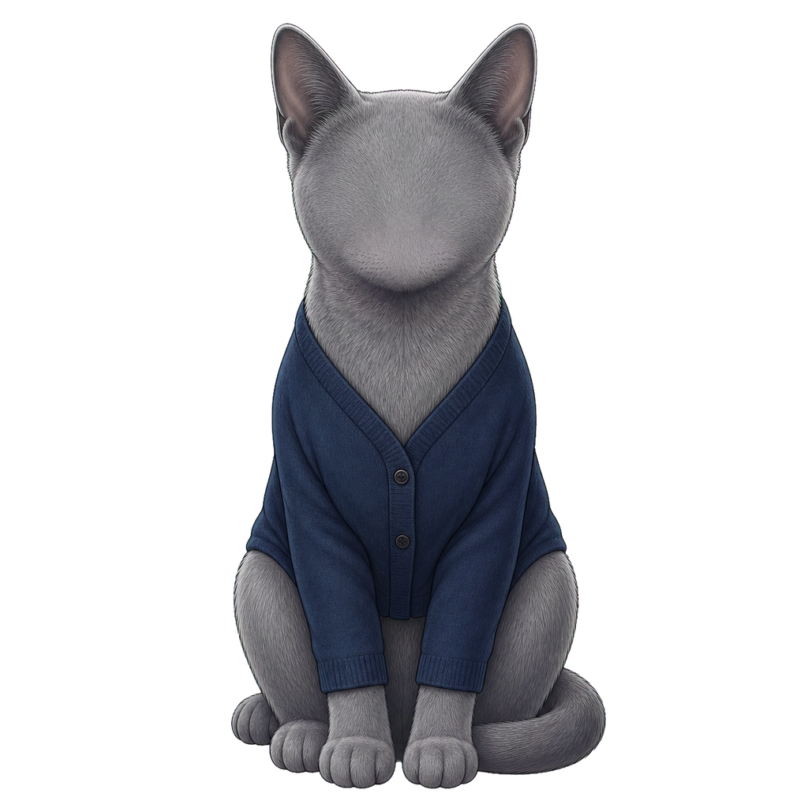
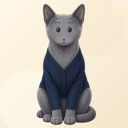
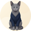
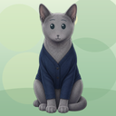
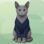
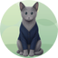
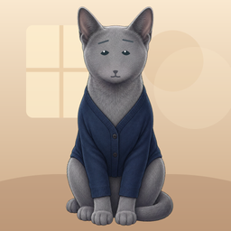
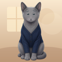
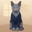
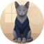
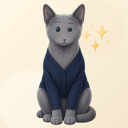
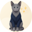
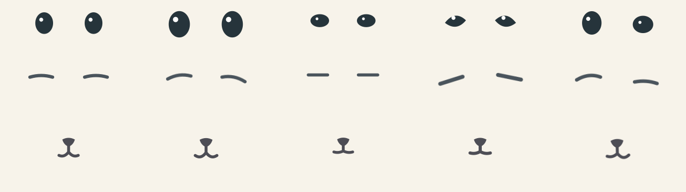
public/character-assets/avatar-system/cat/v1/expressions/gentle/eyes.svg | e00117600772553d12afc0756798427eadc800c5054dd2abef69ec41d20c9a60 |
public/character-assets/avatar-system/cat/v1/expressions/gentle/eyebrows.svg | ca6a8837b45c8f0ef4ae12e01e4b25719dd855227db4c87c02cd0d810e42286f |
public/character-assets/avatar-system/cat/v1/expressions/gentle/nose-mouth.svg | e1fa3b52f1b2e67efa861d68e4e9774ef091d28f37963b8a9d0d6cfb36289717 |
public/character-assets/avatar-system/cat/v1/expressions/bright/eyes.svg | 2fbf1e0b16bcad2ecb04975da31d73688b703e4b755f348a00a2122ba50ac9a1 |
public/character-assets/avatar-system/cat/v1/expressions/bright/eyebrows.svg | 4dd5e2bb8d0e1ecbb28457f3a940181715700af2ece0c1ac56899d9fa213be9e |
public/character-assets/avatar-system/cat/v1/expressions/bright/nose-mouth.svg | 851aebad4a7e7d5f766234993decc2477a26b5bea4cf2addbe7169f45b73e2d7 |
public/character-assets/avatar-system/cat/v1/expressions/chic/eyes.svg | c3a8ead59e6a00ec5279bbb8130937354295cb8b99c288af18f6fdb7a12229ee |
public/character-assets/avatar-system/cat/v1/expressions/chic/eyebrows.svg | 989688061b51dacc7d65391b251fb14ab5cc837699a94132dae1aa9da788f169 |
public/character-assets/avatar-system/cat/v1/expressions/chic/nose-mouth.svg | f887f8768b14c294c6c3ed97ba6e43ab355e75b573cc337e8279c1246d66e6f9 |
public/character-assets/avatar-system/cat/v1/expressions/confident/eyes.svg | 7c5d6984de89d5757d9f6bae9a4351a28a5ddc4fbda244e28ebdede53ab8fb53 |
public/character-assets/avatar-system/cat/v1/expressions/confident/eyebrows.svg | 245b4e9618383c863deafb8550ec051d8b25164e84ba7c1d38aeaff7d34adbe2 |
public/character-assets/avatar-system/cat/v1/expressions/confident/nose-mouth.svg | f7e38ca34fe4e32dc4b004804914b3838182f85196bc2eda8f2e5574152a5a5c |
public/character-assets/avatar-system/cat/v1/expressions/playful/eyes.svg | c4d20b5cd0f17f8318e71cc05b784b5e5fe922af95e0e8c4bacfc6d362ca64aa |
public/character-assets/avatar-system/cat/v1/expressions/playful/eyebrows.svg | 9c316b1cf261accd8a56922dff84920c81f72fb51fa344e6ba9083022bf0c76d |
public/character-assets/avatar-system/cat/v1/expressions/playful/nose-mouth.svg | 7f4cb2cf94e2ad69e2c6678b47bab770da018e4819fb0840ed681aea6e65826e |
public/character-assets/avatar-system/cat/v1/accessories/round-glasses.svg | f4bfe64c6eaa812f2e441f9c407d9c3ac6919c6bb69ab0ac19ea17f3f0f50532 |
{
"version": "cat-v1",
"animalId": "russian-blue",
"outfitBaseId": "russian-blue-navy-cardigan",
"faceFamily": "cat",
"coordinateSystem": "face-centers-v1",
"sourceAssets": {
"sharedExpressionFamily": "cat",
"expressionAssetVersion": "v1",
"roundGlasses": "/character-assets/avatar-system/cat/v1/accessories/round-glasses.svg"
},
"anchors": {
"noseCenter": {
"x": 512,
"y": 318
},
"eyeCenter": {
"x": 512,
"y": 238
},
"browCenter": {
"x": 512,
"y": 181
},
"noseMouth": {
"x": 512,
"y": 318
}
},
"layers": {
"eyes": {
"offsetX": 0,
"offsetY": 0,
"scaleX": 0.92,
"scaleY": 0.92,
"rotation": 0
},
"eyebrows": {
"offsetX": 0,
"offsetY": 0,
"scaleX": 0.88,
"scaleY": 0.88,
"rotation": 0
},
"noseMouth": {
"offsetX": 0,
"offsetY": 0,
"scaleX": 0.9,
"scaleY": 0.9,
"rotation": 0
},
"glasses": {
"offsetX": 0,
"offsetY": 0,
"scaleX": 0.92,
"scaleY": 0.92,
"rotation": 0
}
},
"colors": {
"eyes": "#26343b",
"eyebrows": "#4a545c",
"noseMouth": "#4d4d55"
},
"expressionTransformOverrides": {
"gentle": {},
"bright": {
"eyes": {
"deltaY": -3,
"scaleX": 1.08,
"scaleY": 1.08
},
"eyebrows": {
"deltaY": -6,
"rotation": 2
},
"noseMouth": {
"deltaY": -1,
"scaleX": 1.02,
"scaleY": 1.02
}
},
"chic": {
"eyes": {
"deltaY": 1,
"scaleX": 0.94,
"scaleY": 0.9
},
"eyebrows": {
"deltaY": 2,
"scaleX": 0.94,
"scaleY": 0.94
},
"noseMouth": {
"deltaY": 1,
"scaleX": 0.98,
"scaleY": 0.98
}
},
"confident": {
"eyes": {
"deltaY": -1,
"scaleX": 1.02,
"scaleY": 0.98
},
"eyebrows": {
"deltaY": -3,
"scaleX": 1.05,
"rotation": -3
},
"noseMouth": {
"deltaY": 1,
"scaleX": 1
}
},
"playful": {
"eyes": {
"deltaY": -2,
"scaleX": 1.04,
"scaleY": 1.02
},
"eyebrows": {
"deltaY": -6,
"scaleX": 1.06,
"rotation": 4
},
"noseMouth": {
"deltaX": 2,
"deltaY": 0,
"scaleX": 1.02,
"rotation": -2
}
}
},
"approvedAt": null,
"qaSnapshotId": "russian-blue-cat-v1-candidate"
}